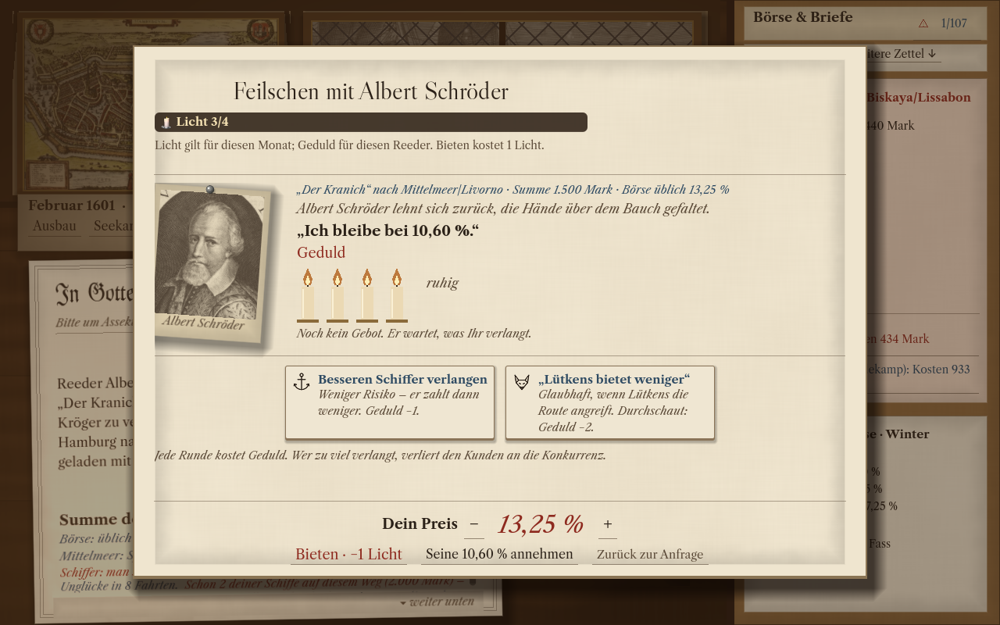
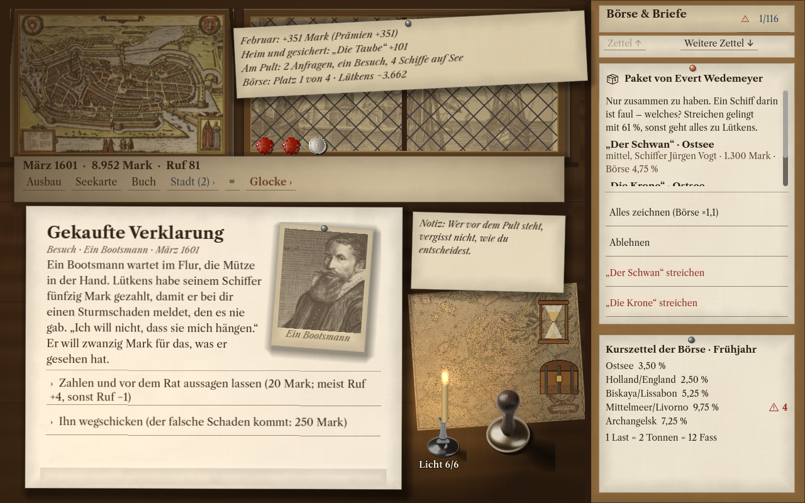
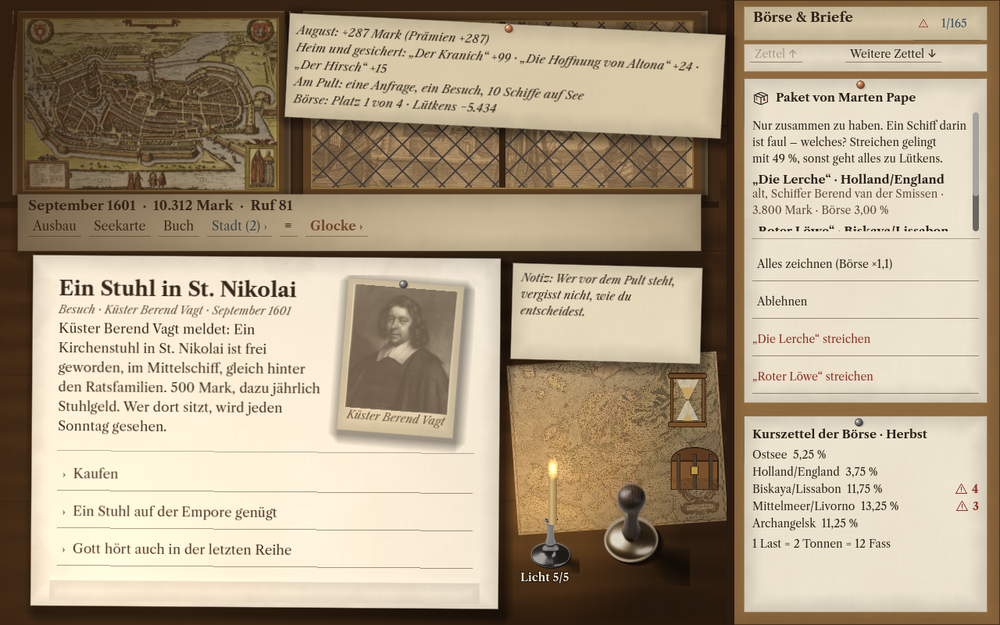

Prüfen & entscheidenRead & decide
Vergleiche Dokumente, entdecke Widersprüche und entscheide, wem du vertraust. Nicht jeder Schaden ist ein Unglück.Compare documents, find contradictions and decide whom to trust. Not every loss is an accident.
Historische Strategie · Prüfen · Verhandeln · HaftenHistorical strategy · Investigate · Negotiate · Take the risk
Hamburg, 1600. Ein Pult an der Börse. Ein Schiff auf hoher See. Und eine Unterschrift, die dein Haus reich machen kann — oder ruinieren.Hamburg, 1600. A desk at the Exchange. A ship on the open sea. And a signature that could make your house a fortune — or ruin it.
Für iPad und Mac in VorbereitungIn preparation for iPad and Mac
25 Sekunden am Pult25 seconds at the desk
Echte Spielszenen · mit Spielton und Musik
Geschnittener Mitschnitt · Oktober 2026Actual gameplay · game audio and music
Edited capture · October 2026
Vergleiche die Papiere und entdecke die falsche Angabe. Verhandle die Prämie, setze dein Siegel — und behalte die Schiffe auf See im Blick.Compare the papers and find the false claim. Negotiate the premium, place your seal — and follow the ships at sea.
Der Film zeigt Dokumentenprüfung, Verhandlung, Vertragsabschluss und eintreffende Nachrichten aus dem Spiel.The video shows document inspection, negotiation, signing a policy and incoming news from the game.
Die Spielbilder in Ruhe ansehenTake a closer look at the screenshots ↓So spielst du KontorHow you play Kontor
Echte Spielbilder · deutsche Oberfläche
Entwicklungsstand Oktober 2026 · zum Vergrößern öffnenActual gameplay · English interface
Development version, October 2026 · open to enlarge

Fordere eine höhere Prämie und bessere Bedingungen. Wie weit gehst du, bevor dein Kunde abspringt?Ask for a higher premium and better terms. How far will you push before your client walks away?

Lies Berichte und Gerüchte. Entscheide, wem du vertraust — und was dir ein Hinweis wert ist.Read reports and rumours. Decide whom to trust — and what a clue is worth to you.

Investiere in deinen Platz in der Stadt. Entscheide, was dir Ansehen wert ist — und was dein Haus sich leisten kann.Invest in your place in the city. Decide what status is worth — and what your house can afford.
Das Meer schreibt die RechnungThe sea sends the bill
Reeder brauchen deine Deckung. Du prüfst ihre Papiere, hörst auf Gerüchte und handelst die Prämie aus. Wie viel ist ein Versprechen wert, wenn Sturm, Krieg und Betrug mit an deinem Tisch sitzen?Shipowners need your cover. Read their papers, listen to rumours and negotiate the premium. What is a promise worth when storms, war and fraud have a seat at your table?
Vergleiche Dokumente, entdecke Widersprüche und entscheide, wem du vertraust. Nicht jeder Schaden ist ein Unglück.Compare documents, find contradictions and decide whom to trust. Not every loss is an accident.
Setze die Prämie, wähle deinen Anteil und besiegle die Police. Jeder Vertrag bindet dein Kapital.Set the premium, choose your share and seal the policy. Every contract puts your capital on the line.
Führe dein Haus durch vier Epochen von 1600 bis 1720. Erben, Ämter und Krisen verändern dein Geschäft.Lead your house through four eras, from 1600 to 1720. Heirs, public offices and crises reshape your business.
Dein Geschäft. Dein Tempo.Your business. Your pace.
Spiele die Kampagne ohne Internetverbindung. Auf Apple-Geräten ergänzt optionales Game Center Erfolge und Bestenlisten. Das Kontor bleibt auch ohne Anmeldung geöffnet.Play the campaign without an internet connection. On Apple devices, optional Game Center adds achievements and leaderboards. Your counting house stays open without signing in.
iPad · Mac
In Vorbereitung. Neuigkeiten zur Veröffentlichung folgen hier.In preparation. Release news will appear here.
Fragen zum Spiel? Zum SupportQuestions about the game? Visit support →Kontor ist ein fiktionales Spiel. Verträge, Versicherungen und Auszahlungen sind Teil der Spielwelt.Kontor is a fictional game. Contracts, insurance and payouts belong to its game world.